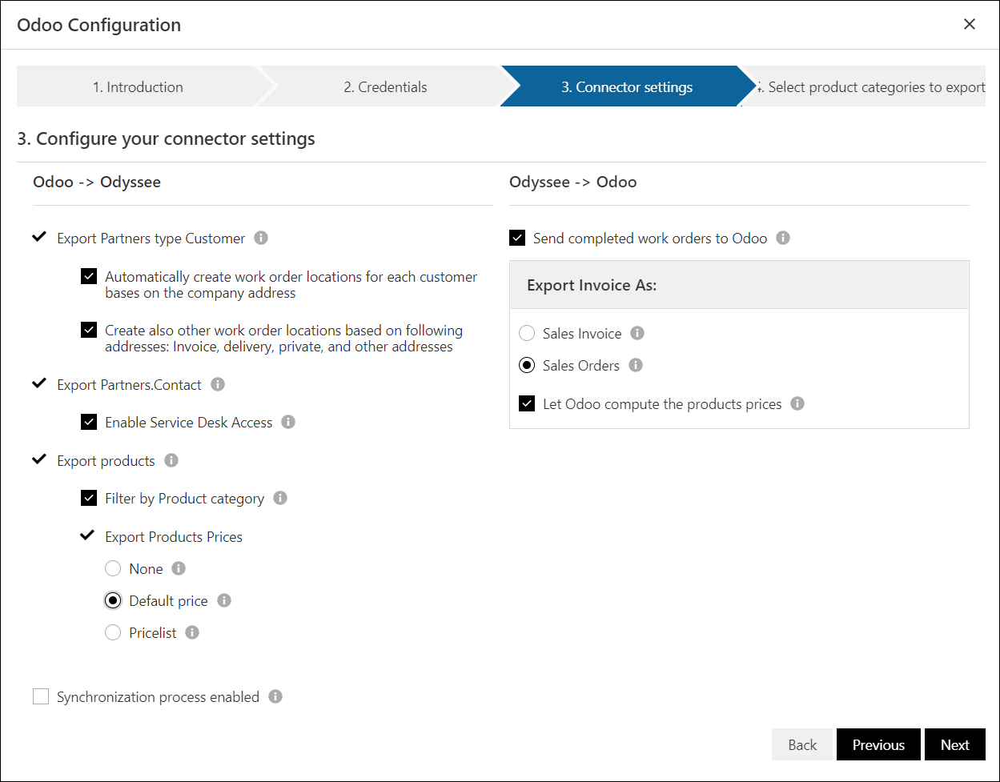

Welcome to the Odyssee connector addon
With this addon, you can establish the link between your Odoo and the Odyssee system.
Introduction
Introduction and frequently asked questions
Credentials
Configure your connector credentials
Odoo API URL:
Be sure this url is reachable from outside your intranet. On the majority of the case, it looks likes https://YourOdooServer.odoo.com/Company DB:
this is the dbname you see when login on Odoo. After sign in Odoo and clicking on the menu 'My Databases', you can find database that you want to connect on the screen 'Your Databases' Username:
the username of a valid-userPassword:
the password of a valid-user
Connector Settings
Configure your connector settings

- Export Partners type Company: Synchronize Odoo Partner to Odyssee company
- Automatically create work order location for each customer
- Create location based on address (Invoice, delivery, private, and other address)
- Export Partners.Contact: Synchronize Odoo Contact of Partner to Odyssee contact
- Enable Service Desk Access: if enable, contacts will be granted to service desk and the Odoo.Contact.Email will be used for service desk login
- Export products: synchronize Odoo product to Odyssee article, and product.category to Odyssee Article Category.
- Filter by Product category: When it is checked, step 4 'Select article categories to export' will be displayed, then the user can select the category that they want to import from Odoo to ODS
- Export Product Prices
- None: No Odoo products prices will be sent to Odyssee
- Default price: The Odoo product price lists will be sent to Odyssee. Please make sure that each price list contains a price for each product!
- Pricelist: Based on Odoo rule, calculate the prices list of Odoo products on Odyssee
- Export Work Order: Send completed work orders to Odoo
- Export Invoice As
- Sales Invoice: Send completed work orders to Odoo Sales Invoice
- Sales Orders: Send completed work orders to Odoo Sales Orders
- Use product price from Odoo: When sending an invoice from Odyssee to Odoo, we can let Odoo compute the price on the fly (and all the rules of Odoo will be applied) or we can use the price that has been computed in Odyssee
- Sync Enable: Background sync will be enabled for this plugin
Select product categories to export
The user can select product categories that they want to export to Odyssee. It means when a product category is checked, it and its products will be synced to Odyssee